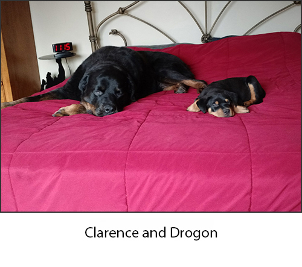

16946 S. Riley
Kincheloe, MI 49788
Phone: 906.495.1313Kinrossveterinarycenter@gmail.com
16946 S. Riley
Kincheloe, MI 49788
Phone: 906.495.1313
As a practicing small animal veterinarian since 1991, Dr. Valerie Chadwick has worked in many areas of Michigan. She started on the west side of the state in a private practice after graduating from Michigan State University.
Progressing from small animal private practice lead to multiple years working full time in an after-hours emergency facility. Academia was another stepping stone in her career, spending 15 years teaching at MSU College of Veterinary Medicine. In between those career pathways she also worked on and off as an independent contractor, allowing her the opportunity to assess what ebenefits those practices to incorporate ideas into her own facility.

She has been a Superman fan since 1978 when Christopher Reeve starred as an American icon symbolizing hope. Her love of Rottweilers began with a very special boy named Tucker. He is the symbol of her logo, wearing Superman's cape, as he did one Halloween night.
Kyra Hill is a student at Lake Superior State University, studying coursework in order to earn her bachelor of Pre-Veterinary Biology. Her love for the veterinary field developed in 2014 when her job experience in a doggie playcare lead to the opportunity for a position in a vet clinic in her hometown of Marshall, MI. She began her work there in the kennels, and worked her way into the position of a technician. Through hands-on learning of the job and exploring the relationships between pets and their families, she has continued to feed her need for knowledge and growth in this field of medicine. Kyra is thrilled to work with the team at Kinross Veterinary Center in order to provide excellent care to you and your beloved pet.
I grew up in Sault Ste Marie where my love of animals began early in life. Caring for a variety of animals throughout my childhood.
I began working in local Veterinary office through my last years of high school starting in 2004, which continued after graduation in 2007. I became a mom in 2013 and again in 2014 to two beautiful little girls. We share a house with 2 Great Danes (favorite breed) a Chihuahua and a German Shorthair.
In my free time, I enjoy spending time with family, horseback riding with my horse of 21 years and just being in nature!
For emergencies, after hours,
weekends/holidays call us at:
906.495.1313
HOURS OF OPERATION:
 Make an appointment.
Make an appointment.